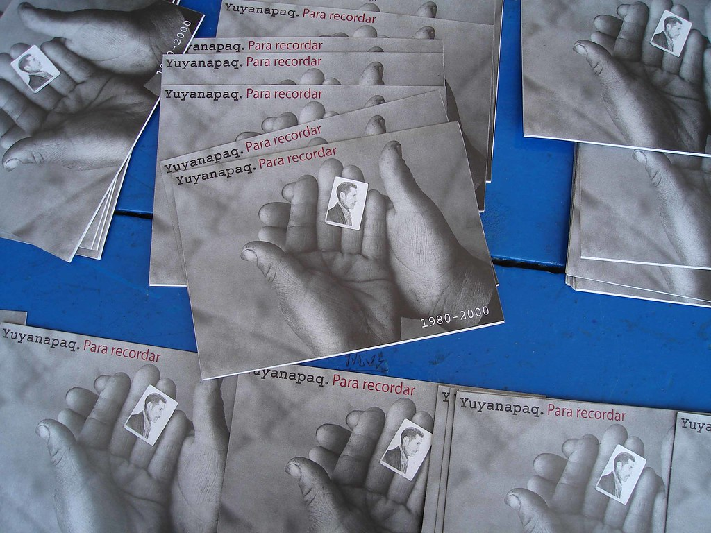
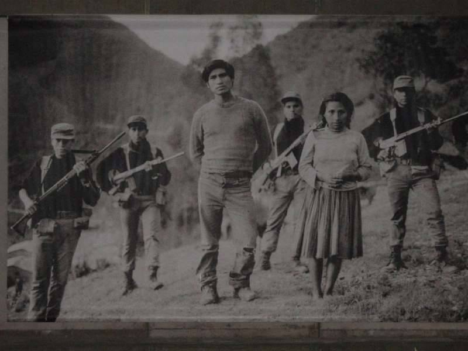
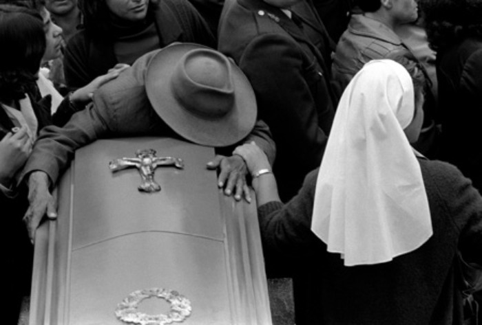
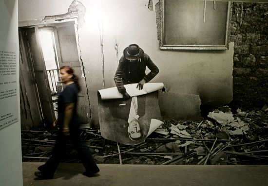
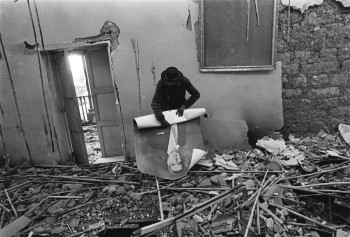
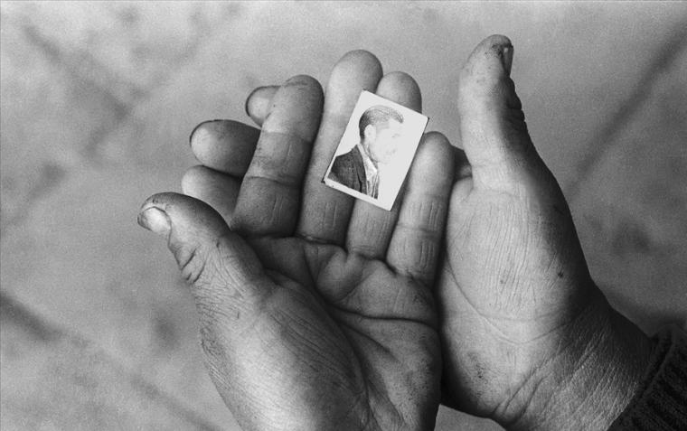

Acerca de Yuyanapaq
¿Qué es Yuyanapaq?
Yuyanapaq. Para recordar es una muestra fotográfica dedicada a preservar la memoria del periodo de violencia ocurrido en el Perú entre 1980 y 2000. Su nombre proviene del quechua y puede entenderse como una invitación a recordar.
La exposición forma parte de los esfuerzos de memoria vinculados al trabajo de la Comisión de la Verdad y Reconciliación. A través de imágenes documentales, propone un espacio de diálogo crítico, reflexión y aprendizaje para que los hechos documentados no se repitan.
Datos clave
- Tema: conflicto armado interno en el Perú.
- Periodo: 1980–2000.
- Lugar: sede del Ministerio de Cultura, Lima.
- Enfoque: memoria, verdad, derechos humanos y reflexión ciudadana.
Contexto
Línea de tiempo breve
Periodo de violencia en el Perú que marcó profundamente a comunidades, familias e instituciones.
Yuyanapaq se presenta como una muestra fotográfica vinculada al proceso de memoria de la CVR.
La muestra continúa como un espacio de memoria, diálogo y aprendizaje para nuevas generaciones.
Galería fotográfica
Mi visita al museo
Esta galería reúne imágenes tomadas durante la visita. Guarda tus fotografías dentro de la carpeta fotos y asegúrate de que los nombres coincidan con los usados en el código.





